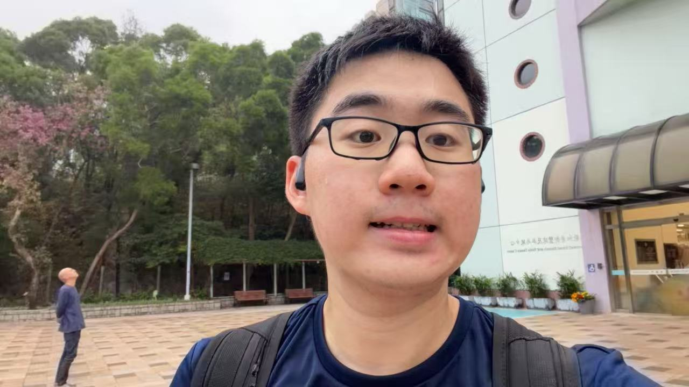

Piaohong (Allen) Wang 王飄鴻
Bio
I am a Computer Science Ph.D. candidate at the City University of Hong Kong (CityUHK), co-advised by Jiawei Ma and Zhicong Lu (now at George Mason University).
My current research lies at the intersection of Human-Centered AI, with a focus on designing better model reasoning frameworks and training paradigms to enable more effective, adaptive, and personalized human-model interaction. Previously, I spent two years conducting academic research in Human-Computer Interaction (HCI), specializing in user interface design and usability studies. During my Ph.D., I have also interned at OPPO Research Institute, NetEase Thunderfire UX Research Center and the Shenzhen Research Institute of Big Data (SRIBD).
Guided by a problem-first philosophy, I aim to bridge theoretical advances in AI with real-world user needs—ensuring that my work leads to tangible, human-centered improvements.
I believe research is an essential part of societal production. For collaborations, please email me: piaohongwang@gmail.com.

Research should be shared with the public and have a positive impact on the world. 研究不應僅在小型專業圈內分享。相反，它應該被公眾看到，並對世界產生積極的影響.